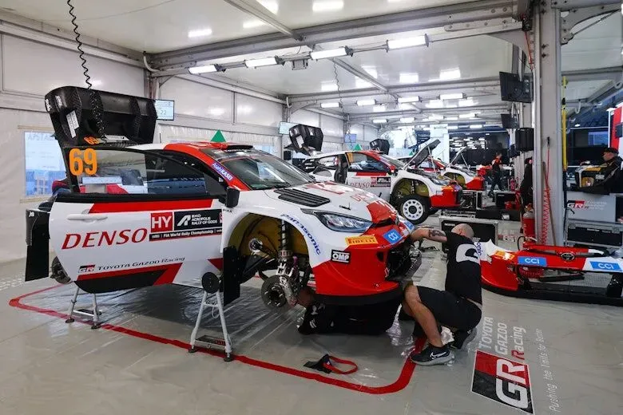
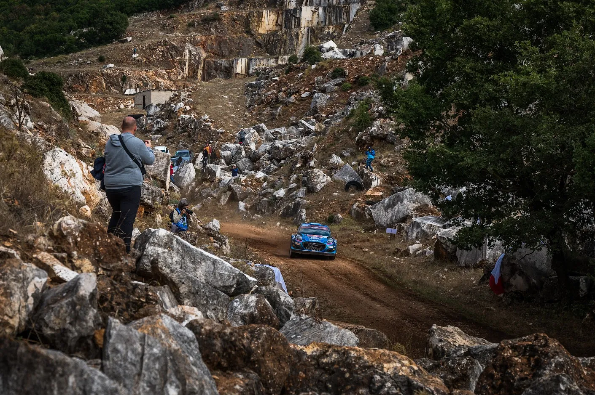

Το Ράλλυ Ακρόπολις και τα Remote Service, ένα εργαλείο για το μέλλον
Τα remote service επιστρέφουν στο WRC, και έτσι οι διοργανώτες στο Παγκόσμιο Πρωτάθλημα Ράλλυ, θα έχουν περισσότερες επιλογές για ειδικές διαδρομές μακρία από την "βάση" του αγώνα και το service park. Τα remote service είναι αυτό που καταλαβαίνετε. Ένας χώρος μακριά από το κεντρικό service park στον οποίο οι ομάδες θα μπορούν να κάνουν σέρβις μέσα στη μέρα. Αυτό δίνει την ευκαιρία στην οργάνωση του κάθε αγώνα να χρησιμοποιήσει ειδικές διαδρομές πολύ πιο μακρία απ΄ό ΄ότι πιο πριν, καθώς τα αυτοκίνητα δεν χρείαζεται να γυρίσουν πίσω στο service park μέσα στη μέρα, μείωνοντας έτσι τις "απλές" διαδρομές.

Αυτός ο κανονισμός είναι ιδιαίτερα ευνοϊκός για τον Εθνικό μας αγώνα. Τις δύο τελευταίες σεζόν που τα remote service χρησιμοποιήθηκαν στο WRC, το Ακρόπολις που είχε την βάση του στο Λουτράκι, μπόρεσε να φτάσει μέχρι το Ελευθεροχώρι και την Ελάτεια το 2011 με ένα remote service στα Καμένα Βούρλα. Το 2012, χάρις σε ένα σέρβις στην Ιτέα (εκεί που είχε regroup πέρσι), το Ακρόπολις πάλι με βάση το Λουτράκι, εφτάσε μέχρι τους Βωξίτες.

Το Ράλλυ Ακρόπολις μετά την επιστροφή του στο Παγκόσμιο Πρωτάθλημα Ράλλυ το 2021, ακολουθεί την ίδια "συνταγή". Μία υπερειδική στην Αθήνα μετά την εκκίνηση κάτω από τον βράχο της Ακρόπολης την Πέμπτη, και ύστερα τα αγωνιστικά παίρνουν τον μακρύ δρόμο για το Λουτράκι, οπού εκεί γίνεται το πρώτο loop ειδικών της Παρασκεύης. Μετά απο αυτή την παράκαμψη, ακολουθούν ειδικές σε Βοιωτία (πχ Λιβαδειά, Θήβα) και μετά ένα πέρασμα απ΄΄ο Βωξίτες (όπως το 2022) ή από Ελάτεια (όπως το 2021 και το 2023). Αυτή η Παρασκευή είναι μια "ανωμαλία" στο Παγκόσμιο, καθώς υπάρχουν ασυνήθιστα πολλές ειδικές με ένα πέρασμα (μόλις μια επαναλαμβανόμενη ειδική στις Παρασκευές και στα τρια προηγούμενα Ακρόπολις), κάτι που δεν συμβαίνει συνήθως σε άλλα ράλλυ σ΄ήμερα. Οι άλλες μέρες είναι παραδοσιακά περισσότερο συμβατικές, με επαναλαμβανόμενες ειδικές κοντά στη Λαμία. Αυτή η "ασυνήθιστη" Παρασκευή, από του χρόνου θα είναι σίγουρα πιο νορμάλ, και σε άλλους αγώνες, όχι μόνο στον δικό μας.
Καλά όλα αυτά, αλλά γιατί αυτή η αναδρομή, ο τίτλος του άρθρου έλεγε για μέλλον, όχι για παρελθόν;
Σωστό, παρεκτράπην για λίγο.
Αλλά, αυτό που σημαίνει ο νέος αυτός κανονισμός για εμάς, είναι ότι το Ακρόπολις θα μπορεί πάντα να επισκέπτεται κλασικές Ακροπολικές ειδικές, ακόμα και αν είναι μακρία από αυτές. Ακόμα και αν η βάση του αγώνα είναι στην Λαμία, ειδικές όπως ο Ταρζάν, που βρίσκεται αρκετά μακριά από το κέντρο του αγώνα, θα μπορούν να ενταχθούν πιο εύκολα στο ωράριο του ράλλυ. Και τέλος, τα remote service αποδεσμεύουν τον αγώνα από το πλέον σύνηθες και μονότονο cloverleaf, των επαναλαμβανόμενων ειδικών και μετά επιστροφή στο σέρβις.

Επειδή στα λόγια όλα είναι καλά, πάμε να δούμε κάποια παραδείγματα στην πράξη:
Έστω για κάποιο λόγο η διοργάνωση επέστρεφε στο Λουτράκι (👎). Οι ειδικές της Αττικής που στα τέλη των 2000s μπορούσαν να χρησιμοποιηθούν, δυστυχώς είναι καμένες, δημιοργώντας "πονοκεφάλους" στους διοργανωτές. Με τα remote service όμως, οι επιλογές είναι πολλές. Ανηφορίζοντας από την Αθήνα, με μία επαναλαμβανόμενη ειδική στην Βοιωτία (μία στο πήγαινε και μία στο έλα) και δυο ειδικές κοντά σε Ιτέα (πχ Καρούτες/Βωξίτες, Γραβιά/Δροσοχώρι) ή κοντά στην Λαμία (πχ Ελευθεροχώρι, Ελάτεια) ο αγώνας αμέσως έχει περισσότερη ποικιλία σε δρόμους και ταυτόχρονα περισσότερες ειδικές, spoilt for choice, που λένε και στην Αγγλική.
Ακόμη, τα remote service δεν χρειάζεται να είναι ο καταλύτης για ένα ταξίδι μακριά από το κέντρο του αγώνα. Μπορεί έτσι να συνδέσει ειδικές που είναι μακρία μεταξύ τους. Για παράδειγμα, μια ημέρα του Ακρόπολις με ειδικές την Ελάτεια, το Ελευθεροχώρι, τον Ταρζάν και το Περιβόλι, δεν είναι πλέον απίθανο σενάριο. Με 2+2 ειδικές (Ελατεια και Ελευθεροχώρι 2 φορές, σέρβις στα Καμένα Βούρλα, και μετά Περιβόλι και Ταρζάν 2 φορές) και remote service γλυτώνουμε από πολλά χιλιόμετρα απλών, και συγχρόνως έχουμε μπόλικη ποικιλία στις ειδικές!
Αφήνω τις πιο περίπλοκες ιδέες στην Motorsport Greece, σίγουρα ξέρουν κάτι παραπάνω από εμένα!
Μπορεί να είναι ακόμα Μάρτιος, αλλά Καλό Αγώνα να Έχουμε!

Δημήτρης Θεοδώρου


Comments